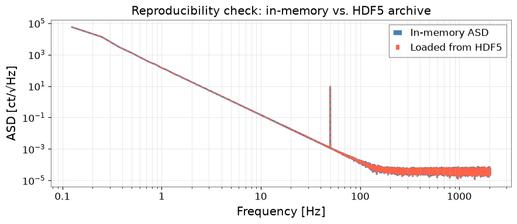

Reproducible Metadata Management with HDF5#
Provenance means recording who did what, when, and how so that any analysis result can be reproduced exactly by someone else — or by yourself six months later.
In gravitational-wave data analysis, provenance is critical because:
Parameters (GPS times, FFT lengths, filter settings) change between runs
Software versions affect numerical results
Sharing results with collaborators requires a self-describing file
This tutorial shows how to use gwexpy’s HDF5 interop layer together with
h5py attribute metadata to build self-describing, provenance-rich
analysis archives.
What this tutorial covers:
Saving a
TimeSeriesto HDF5 with basic metadataAdding provenance attributes (software version, parameters, GPS time)
Storing derived products (ASD, spectrogram) with full lineage
Reading back and verifying provenance
Building a provenance-aware analysis pipeline helper
Setup#
import warnings
warnings.filterwarnings("ignore", category=UserWarning)
warnings.filterwarnings("ignore", category=DeprecationWarning)
import datetime
import json
import os
import platform
import tempfile
import h5py
import numpy as np
import gwexpy
from gwexpy.interop.hdf5_ import from_hdf5, to_hdf5
from gwexpy.timeseries import TimeSeries
1. Synthetic Data#
We create a short DARM-like time series with a known injection for later verification.
fs = 4096.0
T = 64.0
N = int(T * fs)
t0 = 1_300_000_000 # GPS epoch
rng = np.random.default_rng(0)
# Coloured noise + 50 Hz sine injection
t = np.arange(N) / fs
freqs_n = np.fft.rfftfreq(N, 1.0/fs)[1:]
asd_model = np.where(freqs_n < 50, (50/freqs_n)**3, 1.0)
fft = asd_model * np.exp(1j * rng.uniform(0, 2*np.pi, size=len(freqs_n)))
fft = np.concatenate([[0.0], fft])
noise = np.fft.irfft(fft, n=N)
inj = 5.0 * np.sin(2*np.pi * 50.0 * t)
ts = TimeSeries(noise + inj, t0=t0, sample_rate=fs,
name="K1:LSC-DARM_OUT_DQ", unit="ct")
print(f"TimeSeries: {len(ts)} samples @ {fs} Hz, t0={t0}")
TimeSeries: 262144 samples @ 4096.0 Hz, t0=1300000000
2. Writing to HDF5 with Provenance Metadata#
to_hdf5() saves the data array and basic metadata (t0, dt, unit, name).
We then add provenance attributes directly on the HDF5 dataset:
Software versions
Analysis parameters
Timestamp of the run
Host information
def build_provenance(params: dict) -> dict:
return {
"gwexpy_version": gwexpy.__version__,
"numpy_version": np.__version__,
"h5py_version": h5py.__version__,
"python_version": platform.python_version(),
"hostname": platform.node(),
"created_utc": datetime.datetime.now(datetime.UTC).isoformat(),
"params_json": json.dumps(params), # analysis parameters as JSON
}
# Analysis parameters (these would vary between runs)
analysis_params = {
"fftlength": 4.0,
"overlap": 0.5,
"method": "median",
"freq_range": [10.0, 2000.0],
}
fd, hdf5_path = tempfile.mkstemp(suffix=".h5")
os.close(fd)
with h5py.File(hdf5_path, "w") as f:
# --- Raw TimeSeries ---
raw_grp = f.require_group("raw")
to_hdf5(ts, raw_grp, "darm")
dset = raw_grp["darm"]
prov = build_provenance(analysis_params)
for key, val in prov.items():
dset.attrs[key] = val
dset.attrs["description"] = "Raw DARM output, uncalibrated"
print("Written dataset attributes:")
for k, v in dset.attrs.items():
print(f" {k}: {str(v)[:60]}")
print(f"\nHDF5 file: {hdf5_path} ({os.path.getsize(hdf5_path)/1024:.1f} kB)")
Written dataset attributes:
created_utc: 2026-08-27T02:44:28.726483+00:00
description: Raw DARM output, uncalibrated
dt: 0.000244140625
gwexpy_version: 0.2.0
h5py_version: 3.16.0
hostname: runnervmgx7h7
name: K1:LSC-DARM_OUT_DQ
numpy_version: 2.4.6
params_json: {"fftlength": 4.0, "overlap": 0.5, "method": "median", "freq
python_version: 3.11.16
t0: 1300000000.0
unit: ct
HDF5 file: /tmp/tmpar7jve_4.h5 (2056.4 kB)
3. Storing Derived Products with Full Lineage#
Each derived product (ASD, spectrogram, filtered series) should reference the parent dataset so the full processing chain is traceable.
# Compute ASD
asd = ts.asd(fftlength=analysis_params["fftlength"],
overlap=analysis_params["overlap"],
method=analysis_params["method"])
with h5py.File(hdf5_path, "a") as f:
proc_grp = f.require_group("processed")
# Save ASD frequencies and values as separate datasets
freq_dset = proc_grp.create_dataset("asd_frequencies", data=asd.frequencies.value)
freq_dset.attrs["unit"] = "Hz"
asd_dset = proc_grp.create_dataset("asd_values", data=asd.value)
asd_dset.attrs["unit"] = str(asd.unit)
asd_dset.attrs["name"] = asd.name
# Provenance: link back to parent + record parameters
prov_asd = build_provenance(analysis_params)
prov_asd["parent_dataset"] = "/raw/darm"
prov_asd["processing_step"] = "ASD via Welch/median"
for key, val in prov_asd.items():
asd_dset.attrs[key] = val
# Print structure
def print_tree(name, obj):
indent = " " * name.count("/")
attrs_summary = f" [{len(obj.attrs)} attrs]" if hasattr(obj, "attrs") else ""
print(f"{indent}{name.split('/')[-1]}{attrs_summary}")
print("HDF5 file structure:")
f.visititems(print_tree)
HDF5 file structure:
processed [0 attrs]
asd_frequencies [1 attrs]
asd_values [11 attrs]
raw [0 attrs]
darm [12 attrs]
4. Reading Back and Verifying Provenance#
A collaborator (or future-you) can open the file and immediately understand what analysis produced each dataset, using what parameters and software.
with h5py.File(hdf5_path, "r") as f:
# Reconstruct TimeSeries
ts_loaded = from_hdf5(TimeSeries, f["raw"], "darm")
# Read provenance from the raw dataset
dset_attrs = dict(f["raw/darm"].attrs)
params_loaded = json.loads(dset_attrs["params_json"])
# Read back ASD
freqs_loaded = f["processed/asd_frequencies"][:]
asd_loaded = f["processed/asd_values"][:]
asd_prov = dict(f["processed/asd_values"].attrs)
print("=== Reconstructed TimeSeries ===")
print(f" name : {ts_loaded.name}")
print(f" t0 : {ts_loaded.t0.value}")
print(f" samples: {len(ts_loaded)}")
print(f" unit : {ts_loaded.unit}")
print("\n=== Provenance (raw/darm) ===")
for key in ["gwexpy_version", "created_utc", "hostname"]:
print(f" {key}: {dset_attrs[key]}")
print("\n=== Analysis parameters ===")
for key, val in params_loaded.items():
print(f" {key}: {val}")
print("\n=== ASD parent reference ===")
print(f" parent_dataset : {asd_prov['parent_dataset']}")
print(f" processing_step : {asd_prov['processing_step']}")
=== Reconstructed TimeSeries ===
name : K1:LSC-DARM_OUT_DQ
t0 : 1300000000.0
samples: 262144
unit : ct
=== Provenance (raw/darm) ===
gwexpy_version: 0.2.0
created_utc: 2026-08-27T02:44:28.726483+00:00
hostname: runnervmgx7h7
=== Analysis parameters ===
fftlength: 4.0
overlap: 0.5
method: median
freq_range: [10.0, 2000.0]
=== ASD parent reference ===
parent_dataset : /raw/darm
processing_step : ASD via Welch/median
5. Provenance-Aware Pipeline Helper#
For repeated use, wrap the provenance pattern in a reusable context manager that automatically attaches metadata to every dataset written inside it.
import contextlib
@contextlib.contextmanager
def provenance_file(path, params: dict, mode: str = "w"):
with h5py.File(path, mode) as f:
def save_ts(ts_obj, group_path: str, name: str, description: str = ""):
grp = f.require_group(group_path)
to_hdf5(ts_obj, grp, name)
dset = grp[name]
prov = build_provenance(params)
for k, v in prov.items():
dset.attrs[k] = v
if description:
dset.attrs["description"] = description
return dset
def save_array(arr, path_in_file: str, unit: str = "",
description: str = "", parent: str = ""):
parts = path_in_file.rsplit("/", 1)
grp_path, name = (parts[0], parts[1]) if len(parts) == 2 else ("", parts[0])
grp = f.require_group(grp_path) if grp_path else f
dset = grp.create_dataset(name, data=arr)
if unit: dset.attrs["unit"] = unit
if description: dset.attrs["description"] = description
if parent: dset.attrs["parent"] = parent
prov = build_provenance(params)
for k, v in prov.items():
dset.attrs[k] = v
return dset
yield f, save_ts, save_array
# --- Use the helper ---
fd, pipeline_path = tempfile.mkstemp(suffix="_pipeline.h5")
os.close(fd)
run_params = {"fftlength": 8.0, "overlap": 0.75, "method": "median", "run_id": "R001"}
with provenance_file(pipeline_path, run_params) as (f, save_ts, save_array):
save_ts(ts, "input", "darm", description="Raw DARM before processing")
asd2 = ts.asd(fftlength=run_params["fftlength"], overlap=run_params["overlap"])
save_array(asd2.value, "products/asd", unit="ct/rtHz",
description="ASD", parent="/input/darm")
save_array(asd2.frequencies.value,"products/freqs", unit="Hz")
print(f"Pipeline archive: {pipeline_path} ({os.path.getsize(pipeline_path)/1024:.1f} kB)")
# Verify run_id was stored
with h5py.File(pipeline_path, "r") as f:
params_back = json.loads(f["input/darm"].attrs["params_json"])
print(f"Verified run_id: {params_back['run_id']}")
Pipeline archive: /tmp/tmpoqxlpiit_pipeline.h5 (2314.4 kB)
Verified run_id: R001
6. Visualise the Stored ASD (Reproducibility Check)#
Verify that the ASD loaded from the archive matches the in-memory result.
import matplotlib.pyplot as plt
with h5py.File(pipeline_path, "r") as f:
freqs_ar = f["products/freqs"][:]
asd_ar = f["products/asd"][:]
fig, ax = plt.subplots(figsize=(9, 4))
ax.loglog(asd2.frequencies.value[1:], asd2.value[1:],
color="steelblue", lw=2, label="In-memory ASD")
ax.loglog(freqs_ar[1:], asd_ar[1:],
color="tomato", ls="--", lw=1.5, label="Loaded from HDF5")
ax.set_xlabel("Frequency [Hz]")
ax.set_ylabel("ASD [ct/√Hz]")
ax.set_title("Reproducibility check: in-memory vs. HDF5 archive")
ax.legend()
ax.grid(True, which="both", alpha=0.4)
plt.tight_layout()
plt.show()
max_diff = np.max(np.abs(asd2.value[1:] - asd_ar[1:]) / (asd2.value[1:] + 1e-300))
print(f"Max relative difference: {max_diff:.2e} (should be ~machine epsilon)")

Max relative difference: 0.00e+00 (should be ~machine epsilon)
Summary#
Step |
API / Pattern |
Purpose |
|---|---|---|
Write TimeSeries |
|
Save data array + basic metadata |
Read TimeSeries |
|
Reconstruct from archive |
Add provenance |
|
Software version, params, timestamp |
Structured pipeline |
|
Auto-attach provenance to all writes |
Recommended provenance attributes:
Attribute |
Content |
|---|---|
|
|
|
|
|
|
|
HDF5 path to the input dataset |
|
Human-readable description of what was done |
Tips:
Use
h5py.File(..., "a")to append to existing archives without overwriting.Store
params_jsonas a JSON string so arbitrary nested parameters are preserved.For long pipelines, add a
pipeline_versionattribute tied to your analysis code’s git hash.